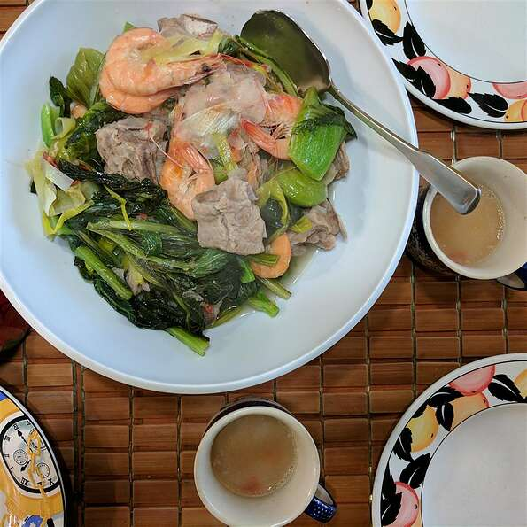

Filipino Pork Sinigang

What is sinigang?
Sinigang is a Filipino soup or stew characterized by its sour and savoury taste. It is most often associated with tamarind (Filipino: sampalok), although it can use other sour fruits and leaves as the souring agent. It is one of the more popular dishes in Filipino cuisine. In 2021, sinigang was rated as the world's best vegetable soup by TasteAtlas.
Ingredients
- 2 ½ pounds pork neck bones
- 2 pounds pork spareribs
- water to cover
- 1 tablespoon salt
- 1 ½ onions, quartered
- 1 taro, peeled and cut into large chunks
- ½ cup fresh lemon juice
- 2 tablespoons fish sauce
- 1 pound bok choy, chopped
- 1 large leek, chopped
- 5 head-on shrimp
Steps
- Place pork neck bones and spareribs in a stockpot with water to cover. Add salt and bring to a boil, skimming the fat off the surface of the broth. Reduce heat; add onions, tomatoes, and taro. Boil until pork meat is very tender, 30 to 40 minutes.
- Stir lemon juice and fish sauce into the broth. Continue boiling until flavors come together, about 15 minutes. Add bok choy, leek, and shrimp. Cover, reduce heat, simmer until shrimp are opaque and bok choy is tender, about 10 minutes more.